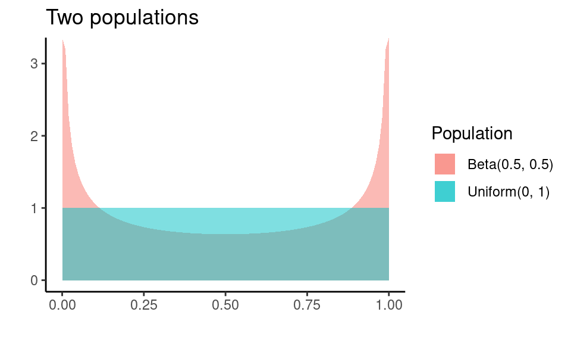
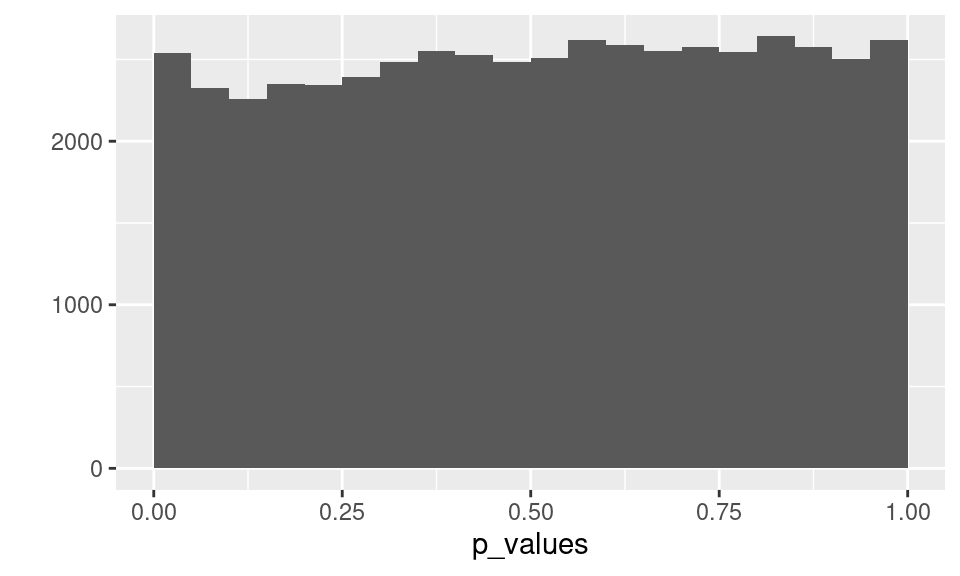
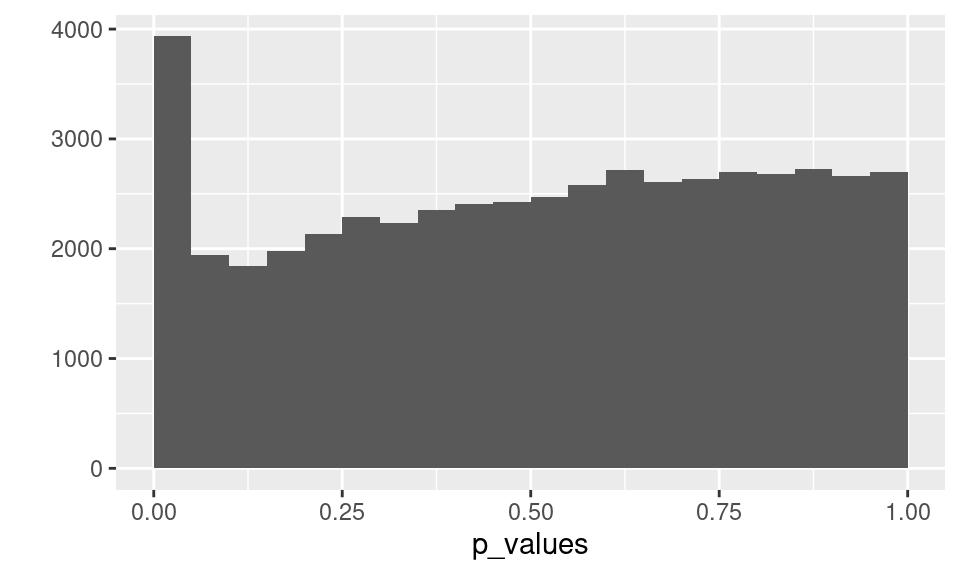

In this lab you will explore, through simulation, the robustness of the Welch’s two sample t-test to departures from assumptions. Namely, you will examine the impact of small sample sizes and non-Normality.
You’ll start by building up a simulation that demonstrates the validity of p-values when the assumptions are satisfied, then explore what happens when they are not.
The final section suggests how you might instead look at the validity of confidence intervals, a task you need to complete for the homework.
To start, you’ll examine a situation where the t-test is valid. You’ll illustrate the claim that when the assumptions are met, and the null hypothesis is true, p-values have a Uniform distribution.
To achieve this with simulation, you’ll repeat many times:
t.test() on data generated in step 1.Then we’ll examine the resulting p-values to answer questions about their distribution. Recall from lecture their distribution should be Uniform in this ideal situation. Let’s take a look at working through these three steps once.
We are interested in the Welch’s two sample t-test with the null hypothesis: \[ H_0: \mu_{2} = \mu_1 \] Or in words, “the two populations have the same mean”. So, to satisfy the null hypothesis our samples need to be drawn from populations with the same mean. Furthermore, to satisfy the assumptions of the test those populations should be Normal and our samples should be independent.
The null hypothesis and assumptions say nothing about the specific value of the common mean, the population standard deviations, nor the sample sizes, so these are up to us to choose. For illustration let’s use samples sizes, \(n_1 = 10\), \(n_2 = 5\), population standard deviations of \(\sigma_1 = 4\), \(\sigma_2 = 2\) and we’ll make the common mean, \(\mu_1 = \mu_2 = 2\).
We can use rnorm() to generate samples from the two Normal populations with these specified parameters:
sample_1 <- rnorm(n = 10, mean = 2, sd = 4)
sample_2 <- rnorm(n = 5, mean = 2, sd = 2)t.test() on data generated in step 1.Now we have some samples, we can run Welch’s t-test on them:
t.test(x = sample_1, y = sample_2)##
## Welch Two Sample t-test
##
## data: sample_1 and sample_2
## t = 0.46262, df = 11.392, p-value = 0.6524
## alternative hypothesis: true difference in means is not equal to 0
## 95 percent confidence interval:
## -2.887220 4.432092
## sample estimates:
## mean of x mean of y
## 3.115970 2.343534Notice the p-value of 0.6524 — it’s large, but that isn’t unexpected because we generated the data to satisfy the null hypothesis. Of course, it won’t always be large…
To proceed with our simulation we need a way to pull out the p-value with code. The output of t.test() is actually an object built around a list (a special data type in R). If you save the output into an object called test_result:
test_result <- t.test(x = sample_1, y = sample_2)You can examine its structure with the str() function:
str(test_result)## List of 10
## $ statistic : Named num 0.463
## ..- attr(*, "names")= chr "t"
## $ parameter : Named num 11.4
## ..- attr(*, "names")= chr "df"
## $ p.value : num 0.652
## $ conf.int : num [1:2] -2.89 4.43
## ..- attr(*, "conf.level")= num 0.95
## $ estimate : Named num [1:2] 3.12 2.34
## ..- attr(*, "names")= chr [1:2] "mean of x" "mean of y"
## $ null.value : Named num 0
## ..- attr(*, "names")= chr "difference in means"
## $ stderr : num 1.67
## $ alternative: chr "two.sided"
## $ method : chr "Welch Two Sample t-test"
## $ data.name : chr "sample_1 and sample_2"
## - attr(*, "class")= chr "htest"Can you see the p-value buried in the output? It’s under $ p.value and this also describes how to extract it from the object, use the object name followed by $p.value:
test_result$p.value## [1] 0.652351OK, let’s look at the steps we’ve put together:
# 1. Generate data
sample_1 <- rnorm(n = 10, mean = 2, sd = 4)
sample_2 <- rnorm(n = 5, mean = 2, sd = 2)
# 2. Run `t.test()`
test_result <- t.test(x = sample_1, y = sample_2)
# 3. Extract p-value
test_result$p.valueBut, this is a single simulation, we need to repeat this many times. The easiest way to do so, is to turn these steps into a function, then use replicate().
It’s been a while since you’ve written a function, so if you need a reminder head to the Writing Functions section in Hands On Programming with R. Essentially we need to come up with a name, let’s say sim_pvalue, and use the syntax for function constructor:
sim_pvalue <- function(){
# 1. Generate data
sample_1 <- rnorm(n = 10, mean = 2, sd = 4)
sample_2 <- rnorm(n = 5, mean = 2, sd = 2)
# 2. Run `t.test()`
test_result <- t.test(x = sample_1, y = sample_2)
# 3. Extract p-value
test_result$p.value
}The body of the function (between { }) is exactly the same as the steps we completed once. I’ve written this function to take no arguments, so to re-rerun this process we just call the function with empty arguments:
sim_pvalue()## [1] 0.6539878Or, to repeat it 10 times, we can use it with replicate():
replicate(10, sim_pvalue())## [1] 0.13100910 0.24647508 0.40882984 0.38418715 0.05563171 0.76143675
## [7] 0.58564022 0.82410658 0.99271379 0.01878318We can now repeat our simulation many times:
p_values_valid <- replicate(50000, sim_pvalue())sim_pvalue <- function(){
# 1. Generate data
sample_1 <- rnorm(n = 10, mean = 2, sd = 4)
sample_2 <- rnorm(n = 5, mean = 2, sd = 2)
# 2. Run `t.test()`
test_result <- t.test(x = sample_1, y = sample_2)
# 3. Extract p-value
test_result$p.value
}
p_values_valid <- replicate(50000, sim_pvalue())
qplot(p_values_valid, binwidth = 0.05, boundary = 0)We’ve divided up the range from 0 to 1 into bins of size 0.05 — 20 equal width bins. The bars are all roughly the same height, ~ 2500, which indicates about the same number of simulations end up in each bin, or the probability of ending up in each bin is about the same. This is the behavior we expect from a random variable with a Uniform distribution.
Or in other words, this rectangular distribution indicates that the distribution of p-values in this scenario is consistent with the p-values being Uniformly distributed. This is exactly what we want to see: when the assumptions are satisfied the p-values are valid.
Write some code to find the proportion of the simulated p-values, p_values, that are less than 0.05?
p_values_validmean(p_values_valid < 0.05)You should find about 5% of your simulated p-values are less than 0.05, consistent with our expectation of about 5%.
OK, you’ve now seen how we can use simulation to examine the sampling distribution of p-values. We can now ask: Is the two-sample t-test valid when the populations are non-normal, and sample sizes are small and unequal?
To set up a situation where the assumptions aren’t met, consider the following two population distributions: Beta(0.5, 0.5) and Uniform(0,1) distribution.

We’ll use these two populations to examine the validity of Welch’s t-test p-values when the populations aren’t Normal. How will our simulation work? Consider the steps from the previous section:
# 1. Generate data
sample_1 <- rnorm(n = 10, mean = 2, sd = 4)
sample_2 <- rnorm(n = 5, mean = 2, sd = 2)
# 2. Run `t.test()`
test_result <- t.test(x = sample_1, y = sample_2)
# 3. Extract p-value
test_result$p.valueTake a look at this new function sim_pvalue_nonnormal():
sim_pvalue_nonnormal <- function(n_1, n_2){
# 1. Generate data
sample_1 <- rbeta(n_1, shape1 = 0.5, shape2 = 0.5)
sample_2 <- runif(n_2, min = 0, max = 1)
# 2. Run `t.test()`
test_result <- t.test(x = sample_1, y = sample_2)
# 3. Extract p-value
test_result$p.value
}sim_pvalue_nonnormal() is identical to sim_pvalue() except:
n_1 and n_2, the sample sizes for each population, andrbeta(), and a Uniform(0, 1) population using runif().Let’s start with a simulation where each sample is of size 5 from each population (\(n_1 = n_2 = 5\)):
p_values <- replicate(50000,
sim_pvalue_nonnormal(n_1 = 5, n_2 = 5))
qplot(p_values, binwidth = 0.05, boundary = 0)
The histogram looks pretty Uniform, though not quite perfectly Uniform. The percentage of p-values less than 0.25 is 23.6% — it would be closer to 25% if the assumptions were met. However, this is quite close for such small sample sizes, so the robustness of the t-test here is still quite impressive.
What happens if one of the sample sizes increases, but not the other? Let’s bump up the sample size from the Uniform to 50:
p_values <- replicate(50000,
sim_pvalue_nonnormal(n_1 = 5, n_2 = 50))
qplot(p_values, binwidth = 0.05, boundary = 0)
The test performed much worse! Now the test is rejecting far too often, as indicated by the large number p-values between 0 and 0.05.
Is it the same if you reverse the sample sizes, and letn_1 = 50, and n_2 = 5? Edit the code to reverse the sample sizes, then run the code to look at the histogram.
p_values <- replicate(50000,
sim_pvalue_nonnormal(n_1 = 5, n_2 = 50))
qplot(p_values, binwidth = 0.05, boundary = 0)Yes, the performance is similarly bad if we flip that sample sizes.
What about if both samples are size 25? Edit the code to use n_1 = 25 and n_2 = 25, then run the code to look at the histogram.
p_values <- replicate(50000,
sim_pvalue_nonnormal(n_1 = 5, n_2 = 50))
qplot(p_values, binwidth = 0.05, boundary = 0)It should look great! The p-values are uniformly distributed, so the test is valid at sample sizes \(n_1 = n_2 = 25\), even though the underlying populations are highly non-Normal.
We could now say with confidence that the t-test is robust to non-Normality, at sample sizes of 25, for the case of data from Uniform(0,1) and Beta(0.5, 0.5) distributions. It also seems to be pretty good for much smaller sample sizes as long as the sample sizes from each population are similar.
With the procedure we just followed, we explored the robustness of the t-test to one particular violation of assumptions, at varying sample sizes. However, we could use the same procedure to investigate the robustness of the t-test to other departures from t-test assumptions.
The previous sections investigated the validity by examining p-values, but sometimes it’s more important to have valid confidence intervals. In particular, the validity of a test only depends on the performance of the test when the null hypothesis is true, but when the null is false, we still want our confidence intervals to perform well.
Recall from lecture a 95% confidence interval procedure is valid, if it covers the true parameter value 95% of the time. The CI in Welch’s t-test estimates the parameter that is the difference in means, let’s call it \(\delta\): \[ \delta = \mu_1 - \mu_2 \]
So, to check validity of confidence intervals via simulation we would, repeat many times:
t.test() on data generated in step 1.Then we could calculate the proportion of outcomes from step 4. that were TRUE, e.g. true parameter was inside the interval, and compare to 0.95.
In terms of code, you’ll want to write a function, sim_ci, that encapsulates the steps 1 through 4. You can then use replicate() to repeat these steps many times. The result will be a vector of many TRUEs and FALSEs, and you are interested in the proportion of TRUEs, easily computed by taking the mean().
In the homework you are asked to do this for two non Normal populations, but for illustration here, we’ll work through a case where we know the confidence intervals are valid: two Normal populations. In fact, let’s use the same scenario we started with in this lab: population means \(\mu_1 = 2\), \(\mu_2 = 2\), sample sizes, \(n_1 = 10\), \(n_2 = 5\), and population standard deviations of \(\sigma_1 = 4\), \(\sigma_2 = 2\).
With this scenario, the true difference in population means is 0:
delta <- 0Consider the steps we need to complete. Generating the data will be the same since we are using the same scenario:
# 1. Generate data
sample_1 <- rnorm(n = 10, mean = 2, sd = 4)
sample_2 <- rnorm(n = 5, mean = 2, sd = 2)Running the test is also the same:
# 2. Run `t.test()`
test_result <- t.test(x = sample_1, y = sample_2)But, now instead of extracting the p-value, we want the CI:
# 3. Extract CI
ci <- test_result$conf.int
ci## [1] -2.887220 4.432092
## attr(,"conf.level")
## [1] 0.95But, this just gives us the confidence interval range, we need to check if the interval contains delta. Let’s pull out the endpoints:
lower <- ci[1]
lower## [1] -2.88722upper <- ci[2]
upper## [1] 4.432092So, the steps together look like:
delta <- 0
# 1. Generate data
sample_1 <- rnorm(n = 10, mean = 2, sd = 4)
sample_2 <- rnorm(n = 5, mean = 2, sd = 2)
# 2. Run `t.test()`
test_result <- t.test(x = sample_1, y = sample_2)
# 3. Extract CI
ci <- test_result$conf.int
# 4. Check if delta is in CI
lower <- ci[1]
upper <- ci[2]
lower < delta & upper > delta## [1] TRUEWhich you could wrap into a function sim_ci:
sim_ci <- function(n_1, n_2){
delta <- 0
# 1. Generate data
sample_1 <- rnorm(n = n_1, mean = 2, sd = 4)
sample_2 <- rnorm(n = n_2, mean = 2, sd = 2)
# 2. Run `t.test()`
test_result <- t.test(x = sample_1, y = sample_2)
# 3. Extract CI
ci <- test_result$conf.int
# 4. Check if delta is in CI
lower <- ci[1]
upper <- ci[2]
lower < delta & upper > delta
}If you replicate this many times:
ci_covers <- replicate(50000, sim_ci(n_1 = 5, n_2 = 10))You get a vector of TRUEs and FALSEs:
head(ci_covers)## [1] TRUE TRUE TRUE TRUE TRUE TRUEYou can find the proportion that are TRUE, i.e. the proportion of 95% confidence intervals that contained the true value, with mean():
mean(ci_covers)## [1] 0.9434I get 0.943 close enough to 0.95 to not raise suspicions the CI isn’t valid in this scenario.